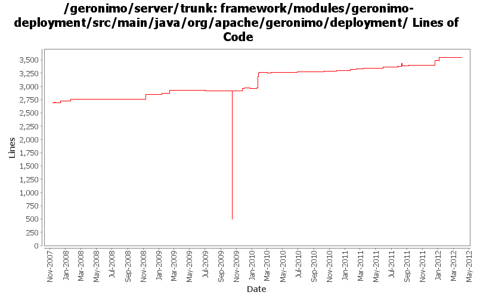

[root]/framework/modules/geronimo-deployment/src/main/java/org/apache/geronimo/deployment
 util
(3 files, 205 lines)
util
(3 files, 205 lines)
 osgi
(6 files, 646 lines)
osgi
(6 files, 646 lines)
 xml
(2 files, 518 lines)
xml
(2 files, 518 lines)
 xmlbeans
(1 files, 210 lines)
xmlbeans
(1 files, 210 lines)

| Author | Changes | Lines of Code | Lines per Change |
|---|---|---|---|
| Totals | 152 (100.0%) | 4908 (100.0%) | 32.2 |
| djencks | 62 (40.8%) | 3349 (68.2%) | 54.0 |
| gawor | 23 (15.1%) | 875 (17.8%) | 38.0 |
| xuhaihong | 40 (26.3%) | 422 (8.6%) | 10.5 |
| jbohn | 2 (1.3%) | 120 (2.4%) | 60.0 |
| genspring | 5 (3.3%) | 60 (1.2%) | 12.0 |
| vamsic007 | 4 (2.6%) | 40 (0.8%) | 10.0 |
| dwoods | 1 (0.7%) | 21 (0.4%) | 21.0 |
| jdillon | 5 (3.3%) | 7 (0.1%) | 1.4 |
| gdamour | 3 (2.0%) | 7 (0.1%) | 2.3 |
| hanhongfang | 1 (0.7%) | 5 (0.1%) | 5.0 |
| rickmcguire | 2 (1.3%) | 2 (0.0%) | 1.0 |
| jlaskowski | 4 (2.6%) | 0 (0.0%) | 0.0 |
GERONIMO-6112 Move the validation codes earlier, and avoid some unneeded process
27 lines of code changed in 1 file:
GERONIMO-6251 work on geronimo-maven-plugin. Use jmxrmi connector from karaf, add DeployerGBean in (slightly inappropriate) j2ee-deployer
62 lines of code changed in 1 file:
GERONIMO-6249 use extender pattern (in DependencyManager) instead of ConfigurationActivator
4 lines of code changed in 1 file:
GERONIMO-6240 make SharedLibExtender not depend on the (now non-service) DependencyManager
10 lines of code changed in 1 file:
GERONIMO-6240 Make several base geronimo functions (kernel, deployer, etc) DS services and make the car-maven-plugin take advantage of that. Server assembly doesn't work yet, builds framework.
714 lines of code changed in 2 files:
GERONIMO-6143 Create a fragment context for each sub modules in the EAR package
8 lines of code changed in 1 file:
Close the reaper thread while stopping the deployer, which could cause some leak in the building time, and it seems that we never close this thread in the past.
6 lines of code changed in 1 file:
GERONIMO-6106 Clean up temp files created in the deployment process
Use a thread local in the FileUtils to hold all the temp files in the deployment process
8 lines of code changed in 2 files:
GERONIMO-6106 Clean up temp files created in the deployment process
a. Start the reaper thread on the server start up, it will clean up the temp files generated by FileUtils in the last run
b. Keep a temp file list in the DeploymentContext, and will be deleted after the deployment finished
92 lines of code changed in 2 files:
GERONIMO-6106 Clean up temp files created in the deployment process
9 lines of code changed in 1 file:
GERONIMO-6097 Use temp directory directly with reference:// to avoid zip the deployed application in the deployment process
1 lines of code changed in 1 file:
GERONIMO-6092 Use DeploymentConfigurationManager for application deployment, also merge the repository from parent configuration manager to the DeploymentConfigurationManager
18 lines of code changed in 2 files:
Revert "GERONIMO-6092 Unwanted application client entry is added in config.xml file"
This reverts commit 6ea8eca57be94273c3d0667cea4419afb8a93a07.
10 lines of code changed in 1 file:
Revert "Revert the unwanted commits for using reference:file/directory"
This reverts commit 142e5f64e21249156c5aef5b26e013b7e819fb15.
6 lines of code changed in 1 file:
Revert the unwanted commits for using reference:file/directory
8 lines of code changed in 1 file:
GERONIMO-6092 Unwanted application client entry is added in config.xml file
11 lines of code changed in 1 file:
GERONIMO-6058 Replace StringBuffer usage with StringBuilder
2 lines of code changed in 2 files:
switch default Manifest Classpath mode from strict to Lenient
5 lines of code changed in 1 file:
EJB31 spec EE.8.2.1 :
A JAR format file (such as a .jar file, .war file, or .rar file) may reference a
.jar file or directory by naming the referenced .jar file or directory in a
Class-Path header in the referencing JAR file’s Manifest file
38 lines of code changed in 1 file:
GERONIMO-5938 Load JSF taglib xml files from bundles
13 lines of code changed in 1 file:
Add clean up codes for DeploymentContext
11 lines of code changed in 1 file:
This is a workaround for RAR module, and will be deleted once the connector refactoring is done by David
4 lines of code changed in 1 file:
Use client artifact resolver while generating import packages for client module, as it uses different artifact aliases mapping
14 lines of code changed in 1 file:
Make hidden class work in the deployment process
6 lines of code changed in 1 file:
GERONIMO-5680 Remove dynamic import * and use calculated import packages on the runtime, only for deployed applications now
23 lines of code changed in 1 file:
refactor code a bit: inject dynamic-import-header in DeploymentContext instead of Environment and generate slightly better import-package headers
17 lines of code changed in 1 file:
GERONIMO-5658 deploy --inPlace broken for quick start sample, reenable the --inPlace deployment.
1 lines of code changed in 1 file:
revert Deployer.java change in revision 1023013 as it causes massive failures
1 lines of code changed in 1 file:
reduce the number of directories left in the temp dir after a deploy
1 lines of code changed in 1 file:
Make it easier to view the builder list when debuging the deployment process.
5 lines of code changed in 1 file:
GERONIMO-5408. Attach classpaths to modules, and combine them into the DeploymentContext bundle-classpath
40 lines of code changed in 4 files:
1. Add some cleanup codes, so that those tmp files are removed once the deployment is finished
2. Update the jarURLWrite name , also enable it by default.
50 lines of code changed in 1 file:
XBEAN-148 use new xbean-bundleutils
3 lines of code changed in 3 files:
GERONIMO-4909 The changes just remove the bundle if we unload the car from ConfigurationManager
5 lines of code changed in 2 files:
GERONIMO-5037 Support Servlet 3.0 annotation and fragment web file
5 lines of code changed in 1 file:
GERONIMO-5030: Fragment bundles must also be considered when looking up resources
2 lines of code changed in 1 file:
GERONIMO-5166: Enable car-maven-plugin to use Equinox or Felix as the OSGi framework
1 lines of code changed in 1 file:
use the environment to create manifest for the temporary bundle
14 lines of code changed in 1 file:
only update geronimo-plugin.xml when there is a temporary bundle
6 lines of code changed in 1 file:
make sure the dependencies in environment and in geronimo-plugin.xml as the same
9 lines of code changed in 1 file:
(35 more)